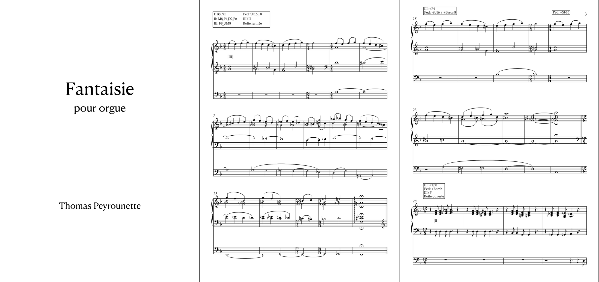

"J'ai commencé la musique à l'âge de 7 ans par l'apprentissage de la clarinette dans l'école de musique d'Orthez, où j'ai pu développer une expérience de musicien d'orchestre dans différents types de formations, et où j'ai également obtenu mon CEM quelques années plus tard.
Particulièrement attiré par le cinéma moderne, les jeux vidéo et les musiques associées, mes intérêts se sont rapidement tournés vers la composition de musique à l'image qui est devenue un objectif de vie.
Après avoir obtenu mon baccalauréat scientifique à Orthez, j'ai poursuivi mes études en licence de musicologie à l'Université Jean Jaurès et au CRR de Toulouse. Je m'y suis construit une base solide en formation musicale (obtention du DEM) et en écriture. J'ai obtenu en juin 2020 ma licence en Musicologie mention très bien."
En septembre 2020, j'intègre la classe de Composition à l'image du Conservatoire d'Annecy sous l'enseignement d'Olivier Militon (2020-2022), puis d'Antoine Dusacq (2022-2023), dans laquelle j'ai pu collaborer en tant que compositeur sur divers projets avec des réalisateurs et réalisatrices d'animations, de films, mais aussi de jeux vidéo.
Depuis octobre 2022, je travaille en tant que co-compositeur avec Anthony Touzalin dans son studio Emotive Muzik, studio qui collabore notamment avec des chaînes de diffusion telles que France télévision, Arte, Ushuaïa TV ou encore RMC sur divers types de média (films de documentaire, spectacles vivants, expérimentations visuelles).
En parallèle de mes études de Composition à l'image, j'ai intégré la classe d'orgue de Thibaut Duret au CRR d'Annecy en septembre 2022. Pris de passion pour cet instrument qui apporte une culture complémentaire et très enrichissante dans le domaine de la composition et qui me permet de m'épanouir en tant qu'interprète également, je suis accepté en CPES (Classe Préparatoire aux Etudes Supérieures) en juin 2024 afin de me spécialiser et me préparer à entrer dans un conservatoire supérieur.
Dinstinctions :
Finaliste à deux reprises en 2021 et 2022 au European Talent Competition organisé par Soundtrack Cologne.
Finaliste du concours Le 7e son en 2022, organisé par l'ICART Lyon et l'Université Lyon 2.
CEM Clarinette (Orthez, 2016)
Entrée CPES Orgue (CRR Annecy, 2024)
Licence: Musicologie et ethnomusicologie (Université Toulouse - Jean Jaurès, 2020)
Dans le cadre de la validation de mon BEM d'orgue en avril 2024, un projet personnel était demandé en plus d'un programme de morceaux donné.
C'est pour cette occasion que j'ai écrit ma première composition pour orgue quelques temps avant l'échéance.
Quelques mois après, en juin, j'ai eu la chance de la rejouer dans l'Eglise Saint-Maurice à Annecy afin de l'enregistrer grâce à la classe de métiers du son du CRR.

Compositions MAO
Arctic Swells
Electrojazzy Day
Echoes
Illuminate
Night Race in the City
Reborn
Paths
Birth of Light
Musique à l'image
Actualités
Au 8eme Jour, film d'animation de l'école d'animation Piktura, disponible sur Canal+.
Sa première diffusion en direct à la télé a lieu le Dimanche 9 juin 2024 à 22h20 sur CANAL+ Group.
La vérité sur les envahisseurs, documentaire animalier.
Dernières diffusions en direct à la télé pour l'épisode 1 le 10-02-24 à 06h20, et pour l'épisode 2 les 10-02-24 à 07h05 et 22-02-24 à 07h05 sur Arte.
Film d'animation réalisé par Agathe Sénéchal, Alicia Massez, Elise Debruyne, Flavie Carin et Théo Duhautois, étudiant.e.s à l'école d'animation Piktura.
Film concourant à de nombreux festivals depuis sa sortie en 2023 et ayant été primé à de multiples reprises : Liste des Prix et Sélections (informations encore confidentielles).
Il a été sélectionné par la prestigieuse chaîne de télé Canal+, plateforme sur laquelle on peut le retrouver dans la catégorie : Film Court métrage.
Sa première diffusion à la télé a lieu le Dimanche 9 juin 2024 à 22h20 sur CANAL+ Group.
Synopsis : Il a fallu sept jours pour créer le monde, il n'en aura fallu qu'un pour bouleverser son équilibre.
Au 8eme Jour - Prix et Sélections
Prix :
Special Mention, Technical Achievement
Spark Animation / Vancouver, CANADA
Grand Prize of the International Competition
International Creative Students Award / Osaka, JAPAN
Youth Jury Prize "conscientiousness"
Paris International Animation Film Festival / Paris, FRANCE
Jury Prize
Festival Premiers Plans / Angers, FRANCE
Award for best animated short film
Santa Barbara International Film Festival / Santa Barbara, UNITED STATES
Award of the town of Puy
Festival Court Mais Bon / Puy-en-Velay, FRANCE
Special Mention of Youth Jury
MONSTRA Lisbon Animated Film Festival / Lisbon, PORTUGAL
Image Prize
Festival Les Regards de l'ICART / Paris, FRANCE
Best animated short film
FESTIMATGE / Calella, SPAIN
Trickstar Nature Award
Stuttgard International Festival of Animated Film / Stuttgard, GERMANY
Best animated movie
TAYF International Short Film Festival / Istanbul, TÜRKIYE
Award of best short film
Cactus International Children's and Youth Film Festival / Aoste, ITALY
Professional Jury Prize
Festival 1ère Marche / Troyes, FRANCE
Award of best short film
Festival Internacional de Animación Caribetoons / Santa Marta, COLOMBIA
Special Mention
Kraków Film Festival / Kraków, POLAND
Jury Prize
Court'Échelle / Paris, FRANCE
Award of "Promising Animated Short Film"
China International Cartoon & Animation Festival / Hagzhou, CHINA
Award of best animation short film
Zlín Dog / Zlín, CZECH REPUBLIC
Jury Prize of Youth Competition
Animafest Zagreb 2024 / Zagreb, CROATIA
Student Jury Prize
Festival du Film d'Animation / Savigny, SWITZERLAND
Young Creative Awards
Deauville Green Awards / Deauville, FRANCE
Award of Best Animation short film
Figari International Short Film Fest / Golfo Aranci, ITALY
Award of Best Film
Joinville International Film Festival / Joinville, BRAZIL
Award for Best Student Animated Short
Palm Springs International ShortFest / Palm Springs / CALIFORNIA
Award of Best Animation short film
Mundos Digitales International Animation Festival / Corogne / SPAIN
CIMA Award of Best Filmmaker
Festival de Cine / Elche / SPAIN
Sélections :
SLASH Fantastic Film Festival / Vienna, AUSTRIA
Festival Voix d'Etoiles / Port Leucate, FRANCE
Spark Animation / Vancouver, CANADA
Ravenna Nightmare Film Festival / Ravenna, ITALY
International Student Film & Video Festival / Beijing, CHINA
Foyle Film Festival / Derry, NORTH IRELAND
Cour(t)s d'École #9 / Lille, FRANCE
Carrefour du cinéma d'animation / Paris, FRANCE
London International Animation Festival / London, ENGLAND
International Creative Students Award / Osaka, CANADA
Festival du Film d'Animation de Tournus / Tournus, FRANCE
Roshd Film Festival / Tehran, IRAN
Paris International Animation Film Festival / Paris, FRANCE
Flickerfest International Short Film Festival / Sydney, AUSTRALIA
Festival Premiers Plans / Angers, FRANCE
La Mida No Importa / Barcelona, SPAIN
27ème Festival du Court Métrage de Fréjus / Fréjus, FRANCE
Festival du Court Métrage de Clermont-Ferrand / Clermont-Ferrand, FRANCE
JEF Festival / Belgium, BELGIUM
Santa Barbara Internationnal Film Festival / Santa Barbara, UNITED STATES
Festival Court Mais Bon / Puy-en-Velay, FRANCE
ANIMAC International Animation Film Festival of Catalonia / Lleida, SPAIN
Festival MEME PAS PEUR de Saint-Philippe / Saint-Philippe, REUNION
VES Awards / Los Angeles, UNITED STATES
Anima / Brussels, BELGIUM
Fantasporto / Porto, PORTUGAL
Tehran International Animation Festival / Tehran, IRAN
Cinéma En famille de Québec (FCEQ) / Quebec, CANADA
IMAXINARIA International Animation Film Festival / La Coruña, SPAIN
MONSTRA Lisbon Animated Film Festival / Lisbon, PORTUGAL
Festival Les Regards de l'ICART / Paris, FRANCE
Tokyo Anime Award Festival / Tokyo, JAPAN
South by Southwest (SXSW) / Austin, UNITED STATES
Festival Courts en Champagne / Aÿ-Champagne, FRANCE
Rencontres du Cinéma Européen / Vannes, FRANCE
Festival REGARD / Saguenay, CANADA
Make Believe Seattle / Seattle, UNITED STATES
Festival Animation Dingle / Dingle, IRELAND
Festival Ciné-Jeune de l’Aisne / Aisne, FRANCE
Festival Tout Court / Gisors, FRANCE
Festival Courts-Bouillon / Rousset, FRANCE
Festival Les Clayes Du Cinéma / Clayes-sous-Bois, FRANCE
Happy Valley Animation Festival / Pennsylvania, UNITED STATES
Cleveland International Film Festival / Cleveland, UNITED STATES
International Grenzland-Filmtage / Selb, GERMANY
Ho Chi Minh City International Film Festival / Hô Chi Minh City, VIETNAM
Festival La Fila de Cortometrajes / Valladolid, SPAIN
Festival SHORTS / Offenbourg, GERMANY
Milwaukee Film Festival / Milwaukee, UNITED STATES
Florida Film Festival / Maitland, UNITED STATES
Festival National du Film d'Animation de Rennes / Rennes, FRANCE
FESTIMATGE / Calella, SPAIN
Corti Da Sogni International Short Film Festival / Ravenna, ITALY
Santiago del Estero Film Festival / Santiago del Estero, ARGENTINA
Festival Ça Cinéma de Valence / Valence, FRANCE
RiverRun International Film Festival / Winston-Salem, UNITED STATES
Georgetown University Film Festival (GUFF) / Washington, UNITED STATES
IESA Video Awards / Paris, FRANCE
Stuttgart International Festival of Animated Film / Stuttgard, GERMANY
Brussels Short Film Festival / Brussels, BELGIUM
Sehsüchte International Student Film Festival / Postdam, GERMANY
TAYF International Short Film Festival / Istanbul, TÜRKIYE
Oberhausen International Short Film Festival / Oberhausen, GERMANY
Cinema Talks Festival / Graz, AUSTRIA
Cactus International Children's and Youth Film Festival / Aoste, ITALY
Chicago Critics Film Festival / Chicago, UNITED STATES
Anifilm International Festival of Animated Films / Liberec, CZECH REPUBLIC
Student Cuts Film Festival / Ljutomer, SLOVENIA
Festival 1ère Marche / Troyes, FRANCE
Festival COURTIVORE / Mont-Saint-Aignan, FRANCE
Festival Internacional de Animación Caribetoons / Santa Marta, COLOMBIA
Festival Regain / Fos sur mer, FRANCE
Kraków Film Festival / Kraków, POLAND
Chilemonos International Animation Festival / Santiago, CHILE
Court’Échelle / Paris, FRANCE
China International Cartoon & Animation Festival / Hangzhou, CHINA
Zlín Dog / Zlín, CZECH REPUBLIC
Acid'Animé Contest / Paris, FRANCE
Caostica International Shortfilm & Videoclip Festival / Bilbao, SPAIN
Animafest Zagreb 2024 / Zagreb, CROATIA
Cinéma Français (la compétition "Jeunes Talents") / Aix-les-Bains, FRANCE
Festival du Film d'Animation / Savigny, SWITZERLAND
Festival National de Créativité Audiovisuelle (FNCA) / Cannes, FRANCE
Deauville Green Awards / Deauville, FRANCE
Figari International Short Film Fest / Golfo Aranci, ITALY
Joinville International Film Festival / Joinville, BRAZIL
Palm Springs International ShortFest / Palm Springs, CALIFORNIA
Festival Cinéma en Liberté / Toulon, FRANCE
Nevada City Film Festival (NCFF) / Nevada City, UNITED STATES
TERRAMIA Film Festival / Cervinara, ITALY
Nahal International Student Short Film Festival / Tehran, IRAN
FEST - New Directors | New Films Festival / Espinho, PORTUGAL
Festival du Film Court en Plein Air / Grenoble, FRANCE
Festival Cinema For Change / Paris, FRANCE
Mundos Digitales International Animation Festival / Corunna, SPAIN
Freedom Film Festival / Radom, POLAND
Galway Film Fleadh / Galway, IRELAND
Open World Animation Festival / Emmaus, UNITED STATES (Pennsylvania)
Animare Licata Animation Film Festival / Licata, SICILY
Festival de Cine / Elche, SPAIN
CARTOON CLUB International Festival of Animation Cinema / Rimini, ITALY
Insomnia International Open-Air Animation Film Festival / Kaluga, RUSSIA
Gran Paradiso Film Festival, Cogne, ITALY
Festival Phare / Arles, FRANCE
Cortocircuiti Short Film Festival / Bari, ITALY
Princeton Student Film Festival / Princeton, UNITED STATES
Festival Internacional de Cortometrajes Cine a la Calle / Barranquilla, COLOMBIA
Festival Internacional de Escuelas de Cine (FIEC) / Montevideo, URUGUAY
6
Filmambiente International Festival of Environmental Films / Rio de Janeiro, BRAZIL
Film Festival della Lessinia / Bosco Chiesanuova, ITALY
Festival du Film Francophone d'Angoulême (FFA) / Angoulême, FRANCE
Maui Film Festival / Kahului, HAWAII
Drama International Short Film Festival / Drama, GREECE
Euganea Film Festival / Padoue, ITALY
Seoul International Children's Film Festival / Seoul, SOUTH KOREA
Festival Off-Courts Trouville / Trouville, FRANCE
5
Festival de Cine Estudiantil FENACIES / Montevideo, URUGUAY
World Festival of Animated Film / Varna, BULGARIA
Nashville Film Festival / Nashville, UNITED STATES (Tennessee)
4
Young Film Fest / Prague, CZECH REPUBLIC
3
Festival International du Film Francophone / Namur, BELGIUM
MANIFEST - Mafra Animation Film Festival / Eiriceira, PORTUGAL
My first Abycine / Albacete, SPAIN
Filmfest Sundsvall / Sundsvall, SWEDEN
Bolton International Film Festival / Bolton, ENGLAND
Sedicicorto Forli International Film Festival / Forli, ITALY
CineEco International Environmental Film Festival of Serra da Estrela / Seia, PORTUGAL
Festival de Saint-Paul-Trois-Châteaux / Saint-Paul-Trois-Châteaux, FRANCE
FILMETS Badalona Film Festival / Badalona, SPAIN
Festival du Film d'Animation pour la Jeunesse / Bourg-en-Bresse, FRANCE
Filem'On International Film Festival for Young Audiences / Brussels, BELGIUM
SUNCINE International Environmental Film Festival / Barcelona, SPAIN
1
Festival Ecran Libre / Aigues-Mortes, FRANCE
La petite fille, le feu follet et Pascal le lapin (2023)
Film d'animation réalisé par Rose Rabin et Julie Correia, étudiantes à l'école d'animation Piktura.
Synopsis : Dans un univers étrange, une jeune fille cherche avec insistance à vendre les snacks du restaurant de sa famille, en dépit du fait qu'elle est maintenant morte. Un feu follet apparaît pour l'emmener dans l'au-delà, mais elle reste dans le déni sur sa situation. Jusqu'à ce qu'elle rencontre l'esprit d'un lapin qui la rassure et l'accompagne par delà les limbes.
Film d'animation réalisé par Océane Lavergne, Benjamin Langagne, Pierre Cilluffo, Marine Beuvain, Lucas Durot et Kerrian Detay, étudiants à l'école d'animation Piktura.
Film concourant à de nombreux festivals depuis sa sortie en 2022 et ayant été primé à de multiples reprises : Liste des Prix et Sélections.
Synopsis : La déambulation d'un vieil homme à bicyclette.
A Bicyclette - Prix et Sélections
Prix :
Promising Animated Short
China International Cartoon and Animation Festival 2023 / CHINA
Best Visual Design
ANIWOW! International Student Animation Festival 2022 / CHINA
1st Prize
ISCA International Students Creative Award 2022 / JAPAN
Special Mention
CARTOON CLUB International Festival of Animation Cinema 2023 / ITALY
Jury Prize of the City of Tournus
Festival du Film d'Animation de Tournus 2022 / FRANCE
Best Animation
The Unprecedented Cinema 2023 / ESTONIA
Special Mention
Festival La mida no importa 2022 / SPAIN
Professional Jury Prize (Animation Category)
Festival National du Court Métrage Étudiant de Paris 2023 / FRANCE
Best Animation Short
Festival Corto Ciudad Real 2023 / SPAIN
Film of the Year - 3D Animation - Highly Commended
Rookie Awards 2023
Best Animation
Early Bird International Student Film Festival 2023 / BULGARIA
Best Editing (Animation Category)
Arte Non Stop Festival 2023 / ARGENTINA
Best Animation Short Award
Boise International Short Film Festival 2023 / USA
1st Prize (Animation 3D)
Festival Animafantasia 2023 / ROMANIA
Sélections :
Short Shorts Film Festival & Asia / Tokyo, JAPAN
Animest International Animation Film Festival / Bucharest, ROMANIA
- Animateka International Animated Film Festival / Ljubljana, SLOVENIA
ANIMA Animation Film Festival / Brussels, BELGIUM
SPARK ANIMATION / Vancouver, CANADA
SIGGRAPH ASIA / Daegu, SOUTH KOREA
ANIMAC International Animation Film Festival of Catalonia / Lleida, SPAIN
Flickers' Rhode Island International Film Festival / Providence, USA
Chicago International Children’s Film Festival (CICFF) / Chicago, USA
Festival International de Cinéma d'Animation de Meknès (FICAM) / Meknes, MOROCCO
ISCA International Students Creative Award / Osaka, JAPAN
China International Cartoon and Animation Festival (CICAF) / Hangzhou, CHINA
ANIWOW! International Student Animation Festival / Beijing, CHINA
LA Shorts International Film Festival / Los Angeles, USA
Sharjah International Film Festival for Children / Sharjah, UNITED ARAB EMIRATES
BANJALUKA International Animated Film Festival / Banja Luka, BOSNIA
FIFAVA International Short Film Festival / Anglet, FRANCE
Animation Dingle Festival / Dingle, IRELAND
CARTOONS ON THE BAY / Pescara, ITALY
Best Of Écoles d’Anim’ 2023 | Festival International du Court Métrage / Lille, FRANCE
TAYF International Short Film Festival / Istanbul, TURKEY
Carrefour du Cinéma d'Animation / Paris, FRANCE
BCN Sports Film Festival / Barcelona, SPAIN
Festival du Film d'Animation de Tournus / Tournus, FRANCE
Festival ENKARZINE / Zalla, SPAIN
Aguilar Film Festival / Aguilar de Campoo, SPAIN
Festival La mida no importa / Barcelona, SPAIN
Festival Music & Cinema Marseille (MCM) / Marseille, FRANCE
Happy Valley Animation Festival / State College, USA
Festival La Fila de Cortometrajes / Valladolid, SPAIN
Catch the Moon International Children & Youth Animated Film Festival / Naples, ITALY
FERFILM International Film Festival / Ferizaj, KOSOVO
Santiago del Estero Film Festival (SEFF) / Santiago del Estero, ARGENTINA
Student Cuts Film Festival / Ljutomer, SLOVENIA
Festival National du Court Métrage Étudiant / Paris, FRANCE
Festival del Cinema di Cefalù / Cefalù, ITALY
Festival Corto Ciudad Real / Ciudad Real, SPAIN
Festival Internacional de Animación Caribetoons / Santa Marta, COLOMBIA
VAFI & RAFI International Children and Youth Animation Film Festival / Rijeka, CROATIA
SUPERTOON International Animation Festival / Šibenik, CROATIA
Animadeba International Animation Festival / Deba, SPAIN
Imaginaria Film Festival / Conversano, ITALY
Constantine's Gold Coin International Animated Film Festival / Niš, SERBIA
ANIMART Festival / Hydra, GREECE
The Unprecedented Cinema / Tallinn, ESTONIA
Tetova International Film Festival ODA (TIFF ODA) / Tetovo, NORTH MACEDONIA
CARTOON CLUB International Festival of Animation Cinema / Rimini, ITALY
Festival de Cine Estudiantil FENACIES / Montevideo, URUGUAY
Festival du Premier Court-Métrage / Pontault-Combault, FRANCE
Sedicicorto Forli International Film Festival / Forli, ITALY
Un Festival C'est Trop Court ! / Nice, FRANCE
Cortocircuiti Short Film Festival / Bari, ITALY
MUMIA Underground World Animation Festival / Belo Horizonte, BRAZIL
Chaniartoon International Comic & Animation Festival / Chania, GREECE
Portobello Film Festival / London, ENGLAND
SHORT FORM International Short Film Festival / Gornji Milanovac, SERBIA
Linea d'Ombra Festival / Salerno, ITALY
Festival du cinéma international en Abitibi-Témiscamingue / Rouyn-Noranda, CANADA
Shorty Week Film Festival / Cádiz, SPAIN
Early Bird International Student Film Festival / Sofia, BULGARIA
Animafantasia International Student Animation Film Festival / Iași, ROMANIA
Girona Film Festival / Girona, SPAIN
Animae Caribe International Animation & Digital Media Festival / Tunapuna, TRINIDAD AND TOBAGO
Arte Non Stop Festival / Buenos Aire, ARGENTINA
AIU Film Festival / Al Jahra, KUWAIT
Caminhos Film Festival / Coimbra, PORTUGAL
Euroshorts International Film Festival / Gdańsk, POLAND
Festival ON COURT À LA BALEINE / Onet-le-Château, FRANCE
Boise International Short Film Festival / Boise, USA
TINDIRINDIS International Animation Film Festival / Vilnius, LITHUANIA
Heroes International Film Festival / Rome, ITALY
ANIMAKOM FEST / Bilbao, SPAIN
Festival du Court-Métrage de Loubens-Lauragais / Loubens-Lauragais, FRANCE
24FPS International Animation Awards / Mumbai, INDIA
Tehran International Animation Festival / Tehran, IRAN
Growing Up (Ciné-concert, 2022)
Voici mon deuxième Ciné-concert que j'ai pu composer dans le cadre de mes études au CRR d'Annecy sur un projet déjà existant. Le ciné-concert a été joué dans le cadre du Festival International du Film d'Animation d'Annecy.
Le film a été réalisé par Lucas Cisterne, la musique originale composée par Isak Hedlund et le mixage son réalisé par Clément Fortin.
Synopsis : Après la perte de ses parents, une petite fille grandit aux côtés de son robot domestique et poursuit son rêve.
Le chêne et le roseau (Concours Le 7e son, 2022)
Le concours Le 7e son est un concours de composition pour film d'animation organisé par l'ICART Lyon et l'Université Lyon 2 dans lequel deux films ont été proposés afin de composer une musique sur l'un d'entre eux : "Le chêne et le roseau" (Laureline Lavandier) et "Sur les rails" (Jérémy Guiter).
Finaliste de ce concours avec "Le chêne et le roseau" je vous propose ici mon travail sur ces images.
Magenta (2022)
Film d'animation réalisé par Naël Kadri, étudiant à l'école d'animation Pivaut de Nantes.
Synopsis : Lino, un jeune garçon de 15 ans, ne comprend pas le monde qui l’entoure. Il sort prendre l'air et va alors être confronté au monde extérieur.
Motùna (2021)
Film d'animation réalisé par Mathilde Bertrand, étudiante en école d'animation chez Pivaut.
Synopsis : Poursuivi dans une forêt, un jeune garçon tente d’échapper aux crocs acérés de la bête qui le chasse. Mais l’enfant devra alors apprendre et comprendre qui il est pour réaliser que les obstacles ne sont parfois pas ceux qu’on croit.
Les Ailes de Tota (2022)
Film d'animation réalisé par Hermine de Laganlerie, étudiante à l'école d'animation Pivaut de Nantes.
Synopsis : Tota est un centaure qui rêve de voler. Passionné par les oiseaux, il va un jour faire la rencontre d'une créature céleste blessée.
Avec le temps (2021)
Film d'animation réalisé par Justine Gouvernet et Chloé Irles, étudiantes en école d'animation chez ECV.
Synopsis : Alors qu'elle rend visite à son mari souffrant à l'hôpital, Mme Richard se remémore sa vie à ses côtés.
Chlorophylle (2021)
Film d'animation réalisé par Adèle Grall, étudiante en école d'animation chez Pivaut.
Synopsis : Airi et Sasha ont l’habitude de s’amuser ensemble. Seulement ils appartiennent à deux mondes différents ; Airi est une souris blanche, issue d’une famille riche, Sasha est un chat noir, venant d’un milieu beaucoup plus modeste. La mère d’Airi voit d’un mauvais œil cette relation et éloigne sa fille le plus possible de Sasha. Malgré leurs différences, le lien fort qui unit les deux enfants leur permet de se retrouver des années plus tard.
Coffee Break (2021)
Film d'animation réalisé par Selene Pitton, étudiante en école d'animation chez Pivaut.
Synopsis : Alors qu'une grand-mère prépare son café, un super-héros combat un super-vilain à sa fenêtre.
Sweet Cocoon (Ciné-concert, 2021)
Dans le cadre de mes études au CRR d'Annecy, j'ai eu l'occasion de composer un ciné-concert sur un projet déjà existant afin d'être joué lors du Festival International du Film d'Animation d'Annecy.
Le film a été réalisé par Matéo Bernard, Matthias Bruget, Jonathan Duret, Manon Marco et Quentin Puiraveau.
La musique originale quant à elle a été composée par Anthony Juret, Baptiste Leblanc, Nicolas Montaigne et Pierre Nguyen.
Synopsis : Une chenille essaie désespérément de rentrer dans son cocon. Malgré de nombreuses tentatives, elle n'abandonnera pas jusqu'à y être arrivée.
Exercice à l'image - Ratatouille (2020)
Exercice de composition à l'image durant ma première année du cursus au CRR d'Annecy.
Scène de course poursuite dans un film d'animation.
Exercice à l'image - Monstres & Cie (2020)
Exercice à l'image pour le concours d'entrée de la classe de composition à l'image d'Annecy en juin (2020).
Jeu vidéo réalisé par François Chapoule, Léo Gammel, Thomas Garrel, Pauline Grosdidier et Marie-Emilie Guilleman, étudiant.e.s à l'école ECV de Lille.
Synopsis : Un Youtubeur et son ami visitent une abbaye abandonnée pour faire une vidéo. Rapidement, ils se rendent compte que le lieu n'est pas si abandonné que ça et notre héros se retrouve isolé, avec appareil photo pour seule arme.
Hikari (2021)
Jeu vidéo réalisé par Florian Soret, Félix Leroy, François Chapoule et Lucas Flamein dans le cadre de leurs études chez ECV Lille.
Synopsis : Plongé dans le folklore japonais durant l'époque Edo, un jeune villageois doit sauver le village des ténèbres en restaurant la lumière dans un temple sacré tenu par l’Oni des Ombres.
The Epopee of Hylas (2023)
Jeu vidéo réalisé par François Chapoule, Marie-Emilie Guilleman, Florian Soret et Edouard Stoppe dans le cadre de leurs études chez ECV Lille en Master 2.
Synopsis : Hylas, un petit félin humanoïde, est missionné afin de réparer les divers bâtiments des îles ravagées par Hadès qui a emprisonné les Dieux, empêchant leur intervention sur Terre. Hylas va pouvoir faire ses preuves en rénovant les habitations et libérer le contact avec les Dieux.
Le European Talent Competition est un concours de composition à l'image organisé dans le cadre du congrès européen de la musique et du son dans l'univers audiovisuel, Soundtrack Cologne.
Honoré d'être à nouveau finaliste de ce concours, je vous fais part de ma proposition musicale.
Mall (European Talent Competition, 2021)
Le European Talent Competition est un concours de composition à l'image organisé dans le cadre du congrès européen de la musique et du son dans l'univers audiovisuel, Soundtrack Cologne.
Honoré d'être finaliste de ce concours, je vous fais part de ma composition musicale.
Mon Point Dans Ta Gueule (2021)
Mon point dans ta gueule est un film à prise de vue réelle réalisé par Oriane De Figueiredo, Emeline Gradeler et Romain Jammet, étudiants chez les Gobelins: l'Ecole de l'Image à Annecy. Le but de ce projet était de réaliser un film en une semaine en respectant certaines contraintes données au préalable.
Musique composée en collaboration avec Lucas Beaugas.
Synopsis : Camille, une jeune scénariste, a le syndrome de la page blanche. Alors que sa supérieure exige des résultats dans les jours qui suivent, elle décide de prendre l'air. Munie de ses écouteurs, elle va alors laisser cours à son imagination face aux différentes scènes de tous les jours.
Exercice à l'image - Monsieur & Madame Adelman (2020)
Exercice de composition à l'image durant ma première année du cursus au CRR d'Annecy.
Scène dramatique extraite du film Monsieur & Madame Adelman.
Exercice à l'image - Star Wars (2020)
Exercice de composition à l'image durant ma première année du cursus au CRR d'Annecy.
Scène de course poursuite dans un film d'action.
Eye of the storm (2020)
Projet personnel afin de m'exercer à la musique sur image, j'ai composé une musique et intégré le sound design sur une partie du clip "Eye of the Storm" de Lovett.
Synopsis : Guidé par un halo de lumière à l'horizon, un homme brave les dangers à bord de son vaisseau volant afin de s'en approcher.
Documentaire Arte réalisé par la société NOMADES. J'ai eu l'occasion de travailler en tant que co-compositeur avec Anthony Touzalin au sein du studio Emotive Muzik.
Synopsis : Ce documentaire découpé en 2 parties explore les différentes espèces animales internationales importées en France par la mondialisation.
La vérité sur les envahisseurs Episode 2 (2023)
Documentaire Arte réalisé par la société NOMADES. J'ai eu l'occasion de travailler en tant que co-compositeur avec Anthony Touzalin au sein du studio Emotive Muzik.
Synopsis : Ce documentaire découpé en 2 parties explore les différentes espèces animales internationales importées en France par la mondialisation.
Into the Clearing (2022)
Dans le cadre d'un exercice à l'image au sein du studio d'Anthony Touzalin, Emotive Muzik, j'ai mis en musique un court extrait de documentaire. Ne pouvant pas partager la vidéo, en voici un court descriptif.
Synopsis :
La lune brille, le jour se lève.
Dans une forêt transpercée par les rayons du soleil, un faon et sa mère.
Soudain, un bruit suspect se fait entendre. Après quelques secondes d'inquiétude et d'inconnu, la source sonore apparaît, ce n'est autre que le roi de la forêt, le majestueux cerf.
Le faon va alors à sa rencontre.
Synopsis : Ce documentaire nous fait voyager en Italie au sein d'un groupe de personnes malvoyantes et non-voyantes pour un séjour touristique dans lequel ces derniers vont visiter et profiter de l'Art sous toutes ses formes. On y découvre alors les différentes stratégies employées pour savourer les oeuvres au travers des autres sens.
Archimuse est une association basée sur Bordeaux dont le but est de promouvoir des actions de médiation et de mise en valeur du patrimoine. Dans le cadre d'une exposition autour de la Flèche Saint-Michel, entrée en chantier de restauration depuis 2021, 3 interviews ont été réalisées auprès du personnel sur le chantier afin de mieux comprendre les enjeux de cette rénovation.
Contact
Pour me contacter, vous pouvez me joindre à cette adresse :